1主线思维导图
学习脉络：绪论（为什么学）→ 基本概念（建立热力学的"语言"）→ 理想气体（第一套能定量计算的模型）。
-
0 绪论为什么学 · 学什么
-
能量与热能
- 能量＝物质运动的度量 · 六种形式
- 热能本质＝分子热运动 ⚠️ 不是感觉、不是温度
- 载体多为流体 → 直接利用 / 转化利用
-
两大理论支柱
- 热力学：能量转换的"量"
- 传热学：温差传热的"快慢"
-
课程框架
- 热力学 7 章：概念→热一律→理想气体→热二律→水蒸气→动力循环→制冷
- 传热学 5 章：方式→导热→对流→辐射→应用
-
石油工程结合点
- 井温测井 · 注蒸汽管路热损失 · 井筒温度场
-
-
1 基本概念系统 · 参数 · 平衡 · 过程 · 功热
-
热力系统
- 工质宜选气态 · 热机：吸热→膨胀做功→排热
- 四类系统 ⭐ 闭口 / 开口 / 绝热 / 孤立
- ⚠️ 闭口系质量不变，体积可以变
-
状态参数
- 广延量（可加）÷ m ＝ 比参数
- 强度量（p、T）不可加
- 基本参数：p、v、T（可直接测量）
-
压力与温度 ⭐
- ⚠️ 只有绝对压力是状态参数
- 第零定律 → 温标三要素
- T = t + 273.15（温差 1 K = 1 ℃）
-
平衡状态 ⭐
- 四平衡：热 / 力 / 相 / 化学
- ⚠️ 平衡 ≠ 稳定 ≠ 均匀
- 只有平衡态才能用参数整体描述
-
状态方程
- 状态公理 N = n + 1 → 只需 2 个独立参数
- pv = RgT · p-v 图一点＝一个平衡态
-
过程与功热
- 准平衡：处处无限接近平衡态
- 可逆 ＝ 准平衡 ＋ 无耗散 ⭐
- δw = p dv ↔ δq = T ds（熵的定义）
- ⚠️ 功与热都是过程量，非全微分
-
-
3 理想气体状态方程 · 物性 · 混合气 · 热力过程
-
理想气体状态方程
- 三假设：无分子体积 · 无分子引力 · 弹性碰撞
- 适用：高温低压、远离液态 ⚠️
- R = 8.314 普适；Rg = R/M 随气体 ⭐
- 实际气体：压缩因子 Z · 范德瓦尔方程
-
热容与 u、h、s ⭐
- u、h 只是温度的单值函数
- Δu = cVΔT · Δh = cpΔT 对任意过程成立 ⚠️
- 迈耶公式 cp − cV = Rg · γ = cp/cV
- 熵变三式 · 熵是状态参数 ⭐
-
理想混合气体
- 道尔顿分压定律 · 分体积定律
- 成分 w、x、φ（且 φ = x）及换算
- 平均 M、Rg；比热按质量分数加权
-
热力过程 ⭐ 全章核心
- 分析四步：方程→参数→图→w / wt / q
- 定容：w = 0，q = cVΔT
- 定压：wt = 0，q = cpΔT
- 定温：q = w = RgT·ln(v₂/v₁)
- 定熵：pvκ = 常数，w = −Δu
- 多变：pvn = 常数，统一四过程
- 图形：绝热线更陡 · 定容线更陡 ⭐
-
2核心概念精讲
每个概念按"是什么 → 怎么理解 → 易错点"展开，覆盖课件重难点与作业题考点。
热力学 vs 传热学 ⭐ 重点
是什么：热力学研究能量及其相互转化的规律，回答"转换的量与效率"；传热学研究由温差引起的热能传递规律，回答"传递的快慢与分布"。
怎么理解：同一根注蒸汽管道——热力学算"蒸汽还剩多少可用能量"，传热学算"每米管道每秒散失多少瓦"。一个管存量与转化，一个管速率。
热能的本质 ⚠️ 易错
是什么：热能＝分子热运动动能与位能之和（不涉及化学变化和核反应的内热能）。温度高低是分子运动剧烈程度的宏观表现。
怎么理解："热"不是人的感觉，也不等于温度——相同温度不同人感觉不同。
🔗 伏笔：理想气体忽略分子间位能后，热力学能只剩分子动能 → u 只是 T 的函数。这是第三章一切结论的物理根源。
四类热力系统 ⭐ 重点
是什么：闭口系（无物质交换，控制质量）、开口系（有物质交换，控制容积）、绝热系（无热量交换）、孤立系（既无能量又无物质交换）。
怎么理解：闭口系"质量锁死、边界可动"（气缸活塞）；开口系"容积锁死、物质进出"（压气机、井筒）。石油案例：油管流动段＝开口系，定容岩心腔＝闭口系。
⚠️ 易错："闭口系统体积不可能发生变化"是错的——只是质量恒定，体积照样能变。
广延量与强度量 ⭐ 重点
是什么：广延量正比于质量、可以相加（V、U、H、S）；强度量与质量无关、不可加（p、T）。
怎么理解：广延量 ÷ 质量 ＝ 比参数（v、u、h、s），比参数具有强度量性质。快速判据：把系统一分为二，该量减半的是广延量，不变的是强度量。
🔗 为什么要分：判断哪些量能直接相加、状态方程该对哪个量写（比参数用小写）。
绝对压力、表压与真空度 ⭐ 重点 ⚠️ 易错
是什么：压力表测的是与大气压 pb 的差：表压 pe = p − pb（高于大气压）；真空度 pv = pb − p（低于大气压）。
怎么理解：只有绝对压力才是状态参数，热力计算前必须先换算成绝对压力。
⚠️ 易错：工质压力不变时，若大气压 pb 变化（天气、海拔），表计读数也会变——所以表压/真空度不能作状态参数。
热力学第零定律与温标 ⭐ 重点
是什么：A、B 分别与 C 热平衡 ⇒ A、B 彼此热平衡 ⇒ 存在数值相等的状态参数——温度。
怎么理解：这就是温度计（C）能代替直接比较冷热的理论依据。温标三要素：固定点、分度方法与单位、测温物性。
常用换算：T(K) = t(℃) + 273.15（温差 1 K = 1 ℃）；t℉ = 1.8·t℃ + 32；水三相点 0.01 ℃ = 273.16 K。⚠️ 代入状态方程必须用 K。
平衡状态：平衡 ≠ 稳定 ≠ 均匀 ⭐ 重点 🔺 难点
是什么：不受外界影响时，系统内部宏观性质均匀一致、不随时间变化、不存在宏观物理过程，称为平衡状态。
怎么理解：四种不平衡势（温差 / 压差 / 相组成差 / 化学差）分别驱动热传递、做功、相变、反应；势差消失即对应四种平衡。只有平衡态才有确定的参数值可写进方程——这就是热力学只研究平衡态的原因。
⚠️ 易错：① 稳态导热各点温度不随时间变（稳定）却存在温差（不平衡）→ 稳定不一定平衡，平衡一定稳定；② 气液两相共存是平衡态但密度不均匀 → 均匀不是平衡的必要条件。
状态公理 N = n + 1 ⭐ 重点
是什么：确定平衡状态所需的独立参数数目 = 与外界交换功的种类数 n + 1（热量传递这一项）。
怎么理解：简单可压缩系只有体积功一种功 → N = 2，p、v、T 中任意两个即可锁定状态。正因如此才存在 pv = RgT 这样的二元关系，才能把状态画成 p-v 图上的一个点。
准平衡过程与可逆过程 ⭐ 重点 🔺 难点
是什么：准平衡过程——不平衡势无限小、过程足够慢，每个中间状态都无限接近平衡态；可逆过程——系统沿原路逆行后，系统与外界同时完全复原。
怎么理解：可逆 ＝ 准平衡 ＋ 无耗散效应（无摩擦、无温差传热、无扩散混合）。准平衡只约束"系统内部"；可逆还要求"外界"不留痕迹，条件更苛刻。
🔗 为什么引入：实际过程都不可逆，但可逆过程给出效率的理论上限——先按可逆计算，再对不可逆因素修正。
功与热是过程量 · 熵的引入 ⭐ 重点
是什么：可逆过程 δw = p dv、δq = T ds；p-v 图过程线下面积＝功量，T-s 图过程线下面积＝热量。
怎么理解：功和热都是"路径函数"（δ 不是全微分），说"某个状态含有多少功/热"没有意义。熵正是为了让"热"拥有一张与 p-v 图对称的状态图而定义的：δs = δq / T（可逆）。
判热方向：ds > 0 吸热；ds < 0 放热；ds = 0 定熵（可逆绝热）。
理想气体模型与适用范围 ⭐ 重点 ⚠️ 易错
是什么：三条微观假设——分子自身体积不计、分子间作用力不计、分子间及与器壁均为弹性碰撞。
怎么理解：忽略分子间位能后，热力学能只剩分子动能 → u 只是温度的函数，这是本章一切公式的出发点。
⚠️ 判断口诀：温度不太低、压力不太高、远离液态。✓ 常温 p ≤ 5 MPa 的 O₂/N₂/H₂/CO、燃气烟气、分压力很低的水蒸气；✗ 蒸汽动力装置中的高压水蒸气（离液态不远）。
R 与 Rg：一个普适、一个专属 ⭐ 重点 ⚠️ 易错
是什么：R = 8.314 J/(mol·K) 对任何气体都相同；Rg = R / M 是气体常数，只随气体种类变（空气 287 J/(kg·K)）。
⚠️ 易错：摩尔基准用 pv = nRT，质量基准用 pv = mRgT，两套方程不能混；注意单位 J/(mol·K) 与 J/(kg·K) 的区别。标准状态（101325 Pa、0 ℃）下 Vm = 22.414 L/mol。
迈耶公式与比热比 ⭐ 重点
是什么：cp − cV = Rg；γ = cp/cV；cV = Rg/(γ−1)，cp = γRg/(γ−1)。
怎么理解：同样升温 1 K，定压比定容多吸收的热量，正好用于对外做体积功（pv = RgT 的增量）——这就是两个热容之差的物理来源。
γ 数值：单原子 1.67、双原子 1.40（空气 ≈ 1.4）、多原子 ≈ 1.29。比热容本质：c = δq/dT 与过程有关，故才分 cV、cp。
Δu、Δh 公式的"万能性" ⭐ 重点 ⚠️ 易错
是什么：对理想气体的任何过程（定容/定压/定温/绝热/多变，甚至不可逆），只要初终温度确定：Δu = cV(T₂−T₁)、Δh = cp(T₂−T₁)。
为什么：u、h 是状态参数且只是 T 的函数 → 只看初终态、与路径无关。
⚠️ 最常见错误：把 Δu = cVΔT 当成"只能用于定容过程"——它对理想气体任何过程都成立。
熵是状态参数 ⭐ 重点 🔺 难点
是什么：Δs 的三个公式（见公式速查）只取决于初、终态。
怎么理解：熵变公式由可逆过程导出，但状态参数与路径无关 → 计算不可逆过程的熵变时，可以"虚构一条连接同样初终态的可逆路径"来算。
⚠️ 易错：绝热 ≠ 定熵。只有可逆绝热才 ds = 0；不可逆绝热过程熵必增。
混合气体：当作一种"虚拟纯气体" ⭐ 重点
是什么：道尔顿分压定律 p = Σpi、分体积定律 V = ΣVi（仅适用理想气体）；成分有 w（质量）、x（摩尔）、φ（体积）三种，且 φ = x。
怎么理解：求出平均摩尔质量 M = ΣxiMi 和平均气体常数 Rg = ΣwiRg,i 后，混合气体即可套用理想气体的全部公式；比热容按质量分数加权：cp = Σwicp,i。
多变过程与多变热容 🔺 难点
是什么：pvn = 常数。n = 0 定压、n = 1 定温、n = κ 定熵、n = ±∞ 定容；w = Rg(T₁−T₂)/(n−1)，wt = n·w，cn = (n−κ)cV/(n−1)。
怎么理解：多变热容 cn 把任意过程的热量写成 q = cnΔT。cn 可正、可负、可为无穷——n 介于 1 与 κ 之间的膨胀过程 cn < 0，会出现"吸热反而降温"的反直觉现象。
3五大热力过程速查
分析套路四步：① 过程方程 → ② 初终态参数关系 → ③ 画 p-v / T-s 图 → ④ 求 w、wt、q。技术功 wt = −∫v dp = w − Δ(pv)。表中 ΔT = T₂ − T₁，比热容取定值。
| 过程 | 过程方程 | 参数关系 | 膨胀功 w | 技术功 wt | 热量 q | 一句话特征 |
|---|---|---|---|---|---|---|
| 定容 | v = 常数 | p / T = 常数 | 0 | −v·Δp | cVΔT ＝ Δu | 吸热全部变为内能 |
| 定压 | p = 常数 | v / T = 常数 | pΔv ＝ RgΔT | 0 | cpΔT ＝ Δh | 吸热＝焓增 |
| 定温 | T = 常数 | pv = 常数 | RgT·ln(v₂/v₁) ＝ RgT·ln(p₁/p₂) | ＝ w | ＝ w ＝ wt | Δu ＝ Δh ＝ 0，吸热全部做功 |
| 定熵 （可逆绝热） |
pvκ = 常数 | T₂/T₁ ＝ (p₂/p₁)(κ−1)/κ | −Δu ＝ cV(T₁−T₂) ＝ Rg(T₁−T₂)/(κ−1) | κw ＝ −Δh | 0 | 膨胀做功全靠消耗内能 |
| 多变 | pvn = 常数 | 把 κ 换成 n 即可 | Rg(T₁−T₂)/(n−1)（n ≠ 1） | n·w（n ≠ ∞） | cnΔT，cn = (n−κ)cV/(n−1) | n = 0、1、κ、∞ 时退化为上面四过程 |
📐 图形特征①：T-s 图上定容线比定压线陡 ⭐
两者都是指数曲线，斜率 dT/ds = T/c；因为 cV < cp，所以定容线更陡。同一温升下定容线对应的熵增更小。📐 图形特征②：p-v 图上绝热线比定温线陡 ⭐
定温线斜率 −p/v，绝热线斜率 −κp/v；κ > 1，绝热线更陡。膨胀时绝热降压更快。⚠️ 公式适用边界
w = −Δu 只用到第一定律，适用于任何工质、任何绝热过程（可逆或不可逆）；含 κ 的公式（如 Rg(T₁−T₂)/(κ−1)）只适用于定比热理想气体的可逆过程。💡 定温过程技巧
q = w = wt = RgT·ln(v₂/v₁) = RgT·ln(p₁/p₂)；且 q = TΔs 对实际气体或液体的可逆定温过程同样适用。4公式速查卡
① 理想气体状态方程
R 普适、Rg 专属；标准状态 Vm = 22.414 L/mol。
② 热容关系
定值摩尔热容：单原子 γ=1.67，双原子 γ=1.40，多原子 γ≈1.29。
③ 热力学能与焓（任意过程通用）⭐
理想气体 u、h 只是 T 的单值函数；h = u + pv = u + RgT。
④ 熵变三式（状态参数，只看初终态）⭐
由可逆过程导出，但理想气体任何过程的熵变都能用。
⑤ 功与热的可逆计算式
p-v 图下面积＝功，T-s 图下面积＝热；δ 非全微分（过程量）。
⑥ 绝热（定熵）过程
w = −Δu 适用于任何绝热过程；其余限定比热理想气体可逆情形。
⑦ 多变过程
Δu、Δh、Δs 一律按理想气体通用公式计算。
⑧ 理想混合气体
wi = xiMi/ΣxjMj；比热按质量分数加权。
5易错判断（对照作业题考点）
先自己判断对错，再点击展开答案。
1. 闭口系统的体积不可能发生变化。
2. 表压力或真空度可以作为状态参数进行热力计算。
3. 稳定状态就是平衡状态。
4. 开口系统既有能量交换，又有质量交换。
5. 不可逆过程就是无法回复到初态的过程。
6. Δu = cVΔT 只能用于定容过程。
7. 理想气体熵变公式由可逆过程导出，因此不能用于不可逆过程。
8. 绝热过程一定是定熵过程。
6考前速记
7课件图表逐讲
按课件 PDF 页码顺序，对每一张原理图、坐标图、示意图与关键表格逐一解释（图片即课件原页截图，仅供个人学习）。每张图按「图上有什么 → 怎么读/怎么用 → 🎯 重点」展开；纯实拍照片页在每章末尾归组速览。
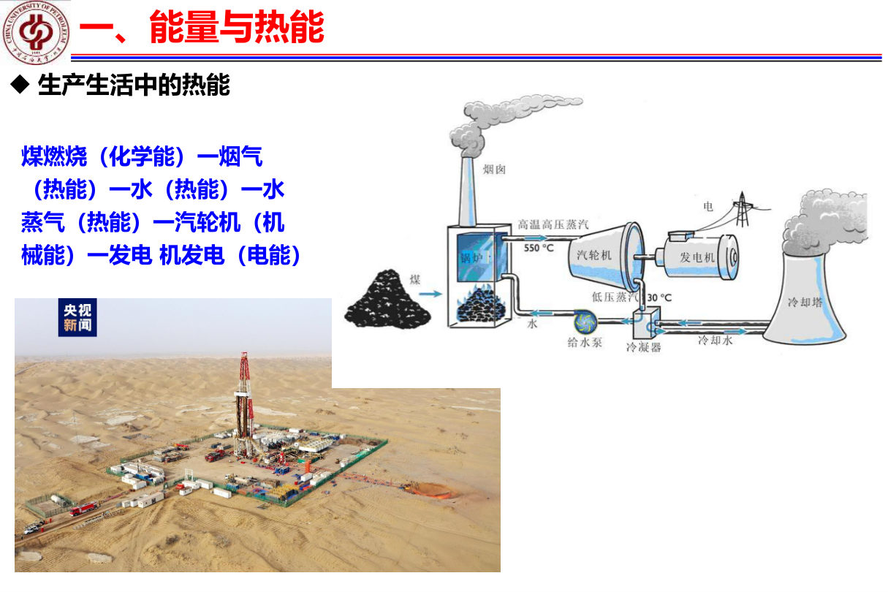
图上有什么：左侧蓝色文字给出能量形式变化链；右侧是火电厂卡通示意图：煤 → 锅炉（炉膛燃烧、烟囱）→ 550 ℃ 高温高压蒸汽 → 汽轮机 → 发电机 → 电；做功后的乏汽（30 ℃ 低压蒸汽）经冷凝器被冷却水带走热量，冷却塔排放，给水泵再把水送回锅炉。
怎么读：顺着箭头把每一步的能量形式标出来：煤燃烧（化学能）→ 烟气（热能）→ 水/水蒸气（热能）→ 汽轮机（机械能）→ 发电机（电能）。水蒸气是携带热能的"工质"，在锅炉吸热、汽轮机膨胀做功、冷凝器排热。
🎯 重点：这就是"热机"的完整原型——工质吸热 → 膨胀做功 → 排热，正是第一章热机三步曲的来源；550 ℃ 进汽轮机、30 ℃ 排汽也直观说明能量不但有"数量"还有"品质"（为热力学第二定律埋伏笔）。
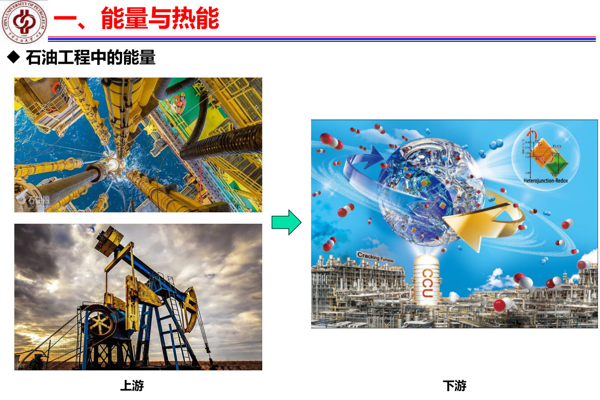
图上有什么：左侧"上游"两张照片（海上钻井平台俯瞰、抽油机），绿色箭头指向右侧"下游"（炼化厂全景：裂解炉、CCU 碳捕集利用、分子转化示意）。
怎么读：石油产业链上游解决"把油采出来"，下游解决"把油炼成产品并处理碳"——两个环节都布满热工问题（注汽/举升/井筒温度场；加热炉/裂解/余热回收）。
🎯 重点：本课程叫"石油工程热工学"的落点：热工知识贯穿上下游，后面的应用题、思考题多以此为背景。
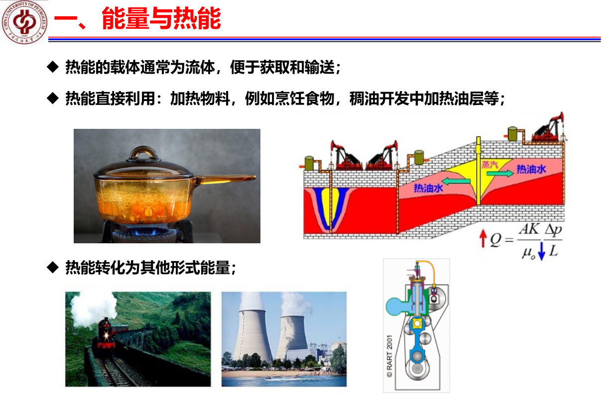
图上有什么：上半部分：左为烹饪锅（直接加热食物），右为稠油热采地层剖面示意——注汽井注入蒸汽，在油层形成蒸汽腔，原油被加热降粘后随热油水被驱替到采油井（井口抽油机采出），配原油流量公式 Q = AKΔp/(μoL)；下半部分：蒸汽机车、电站冷却塔、斯特林发动机剖视图（热能转化为机械能的实例）。
怎么读：热能的载体是流体，利用只有两条路：① 直接利用——把对象加热（稠油热采是石油行业最典型场景）；② 转化利用——热→机械能。
🎯 重点：看清公式里的因果链：蒸汽加热 → 温度↑ → 原油粘度 μo↓ → 产量 Q↑。这一张图就说明了"热能直接利用"在油田的价值，也是"石油"二字最直接的落点。
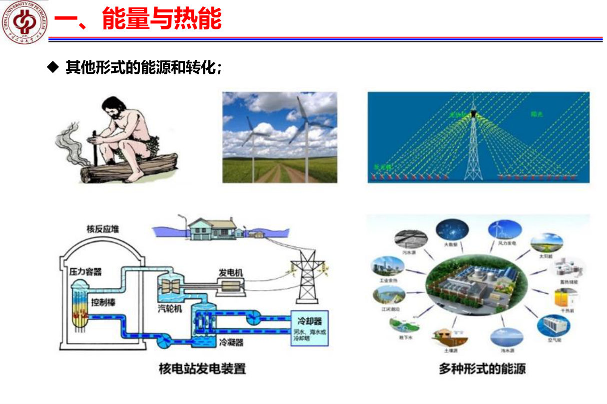
图上有什么：上排：钻木取火（人类最早的能源利用）、风力发电、微波/激光武器（辐射能）；左下：核电站发电装置示意——核反应堆（压力容器+控制棒）产生热量 → 汽轮机 → 发电机 → 冷凝器 → 冷却器（河水/海水/冷却塔）；右下：多种形式能源汇总（太阳能、风、地热/干热岩、工业余热、空气能、氢能储运等）。
怎么读：核电站与火电厂的装置结构完全同构——都是"热源 → 蒸汽 → 汽轮机 → 冷凝"，区别只在热源是核燃料还是煤。
🎯 重点：记住"能源不同、热力循环同构"；冷凝器/冷却器的设计就是传热学篇的任务（强化传热）。
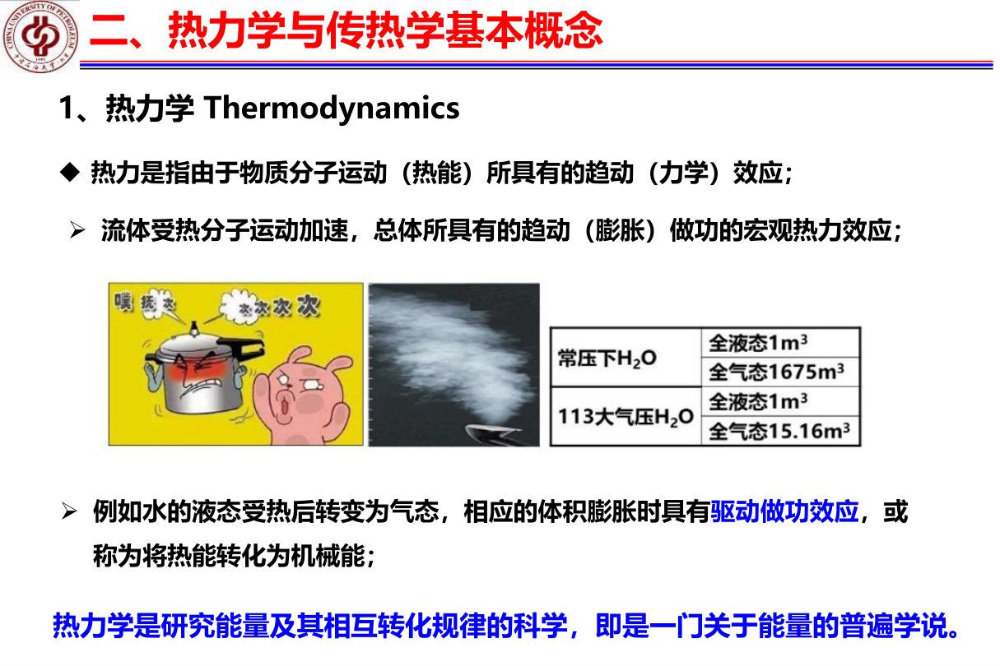
图上有什么：高压锅卡通 + 水蒸气照片 + 一张对比表：常压下 H₂O 全液态 1 m³ → 全气态 1675 m³；113 大气压下 H₂O 全液态 1 m³ → 全气态 15.16 m³。
怎么读：同样 1 m³ 液态水，汽化后体积分别膨胀约 1675 倍和 15 倍——压力越高膨胀倍数越小，但膨胀量依然可观，足以推动活塞做功。
🎯 重点："热力效应"的量化版：热能→机械能靠工质受热膨胀；这也回答了"为什么工质要选气态"——膨胀性和流动性最好。
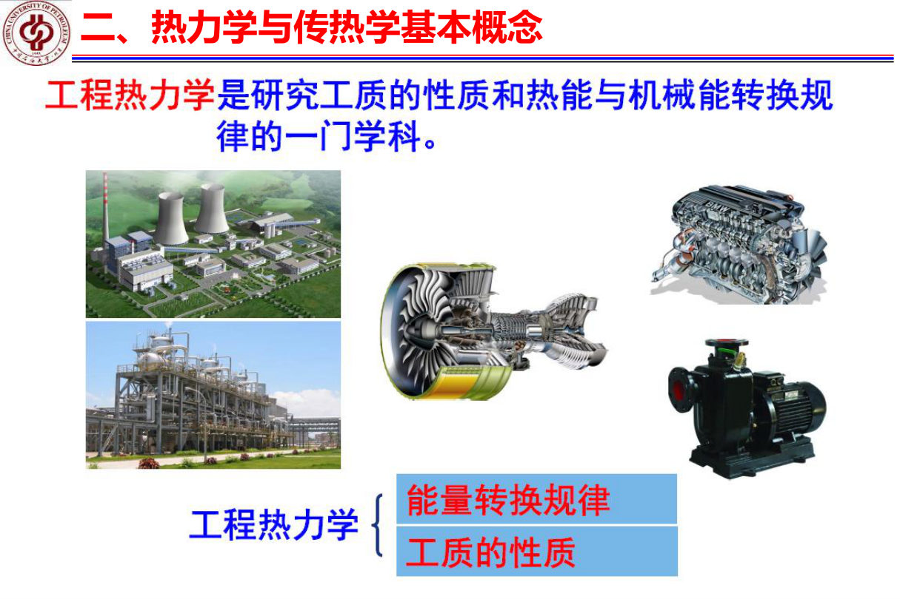
图上有什么：顶部定义：工程热力学是研究工质的性质和热能与机械能转换规律的一门学科；下方蓝色框图把学科拆成"能量转换规律 + 工质的性质"两大板块；配电厂、化工厂、航空发动机剖视、汽车发动机、水泵等照片。
怎么读：两大板块对应课程两条暗线：第一章（基本概念）与第三章（理想气体）讲"工质的性质"，第二章以后（热一律、热二律、循环）讲"能量转换规律"。
🎯 重点：复习时可用这张图自查：两块内容是否都能独立讲清楚？
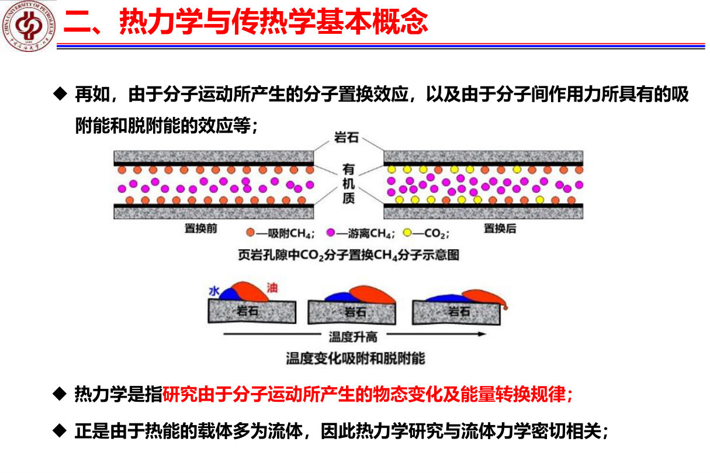
图上有什么：上排两幅：岩石（有机质）孔隙中，"置换前"孔壁吸附橙色分子（CH₄）、孔隙内是紫色游离 CH₄；"置换后"注入的黄色分子（CO₂）占据吸附位，把 CH₄ 顶成游离态。下排三幅：随温度升高，岩石表面上水/油的附着形态逐步变化（吸附能与脱附能随温度变化）。
怎么读：分子间作用力产生吸附能；CO₂ 与甲烷竞争吸附位时更占优势，于是"注 CO₂ 换 CH₄"在分子层面成立。
🎯 重点：热力学不只研究"大机器"——分子尺度的吸附/脱附、置换效应同样是能量问题；这是注 CO₂ 开发非常规气的理论基础，也说明热力学与流体力学、界面物理密切相关。
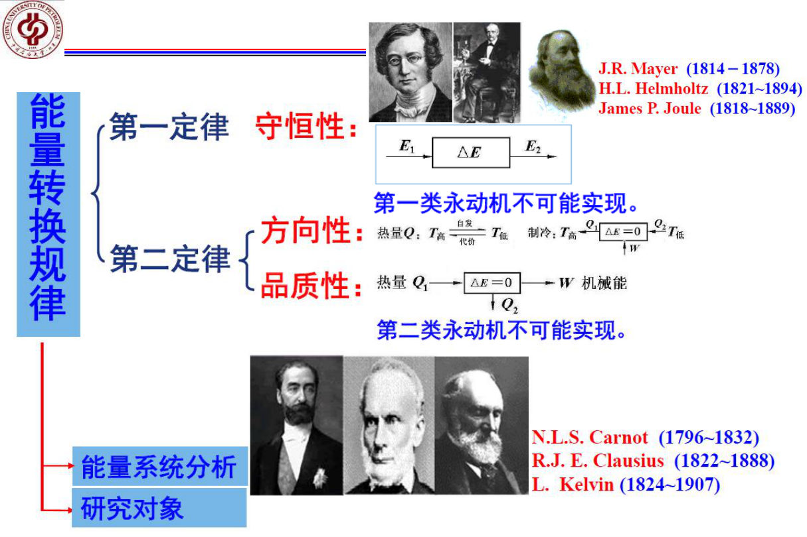
图上有什么：左侧竖排"能量转换规律"，分两支：第一定律——守恒性：E₁ → ΔE → E₂，推论"第一类永动机不可能实现"（对应 Mayer、Helmholtz、Joule）；第二定律分两点——方向性：热量 Q 自发从 T高流向 T低，反向（制冷）必须"代劳"消耗功 W；品质性：热量 Q₁ 只能一部分变机械能 W，其余 Q₂ 排给低温热源，推论"第二类永动机不可能实现"（对应 Carnot、Clausius、Kelvin）。
怎么读：一张图概括热力学两大定律的灵魂：量的守恒 + 过程的方向与品质。方向性小图里"自发/代劳"两个箭头就是全部精髓。
🎯 重点：先把两条"不可能实现"背下来——判断题高频；等学到第四章（热二律）再回头细看，这张图就是那一章的目录。
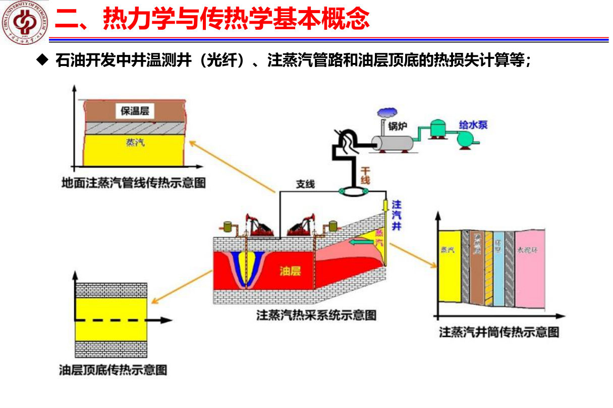
图上有什么：中央大图"注蒸汽热采系统"：锅炉 → 干线/支线 → 注汽井 → 油层内蒸汽腔（黄色）驱替原油 → 抽油机采出；周围三张小图分别放大三处传热环节：左上"地面注蒸汽管线"（保温层包着蒸汽管）、右"注汽油管井筒"径向多层结构（蒸汽 → 隔热层 → 环空 → 地层 → 水泥环）、左下"油层顶底传热"（蒸汽带向顶、底岩层散热）。
怎么读：蒸汽从锅炉到油层要走"地面管线 → 井筒 → 油层"三段，每一段都向环境散失热量——每一段都对应一张径向传热模型图。
🎯 重点：课件原文"注蒸汽管路和油层顶底的热损失计算"就落在这一张图上；传热学篇的导热（隔热层/水泥环/岩层）、对流换热（环空流体）、辐射（高温表面）最终都能归结到它——是连接两篇课程的枢纽图。
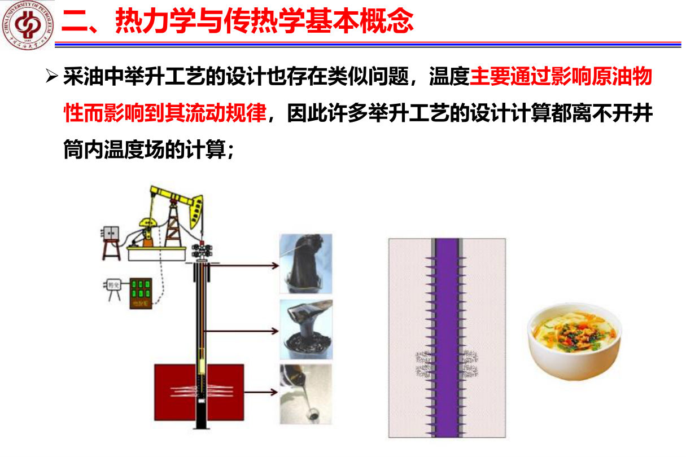
图上有什么：左侧抽油机井筒结构示意（从井口到油层），配原油在地面流动的实拍照片；课件红字强调：温度主要通过影响原油物性而影响其流动规律，许多举升工艺的设计计算都离不开井筒内温度场的计算。
🎯 重点：原油粘度对温度极其敏感 → 井筒里每升高/降低 1 ℃ 都会改变流动规律 → 井筒温度场计算是举升设计（杆式泵、螺杆泵、电潜泵等）的前置步骤。这是"为什么要学传热学"在采油方向的答案。
P2–3 代尔夫特理工大学与巴西交流照片（课程国际合作背景）。
P6–8、10 生产生活中机械能/热能实例照片（跑车、舰船、火箭、炉灶、暖气片测温等）——对应"能量形式"的直观素材。
P12 六种能量形式配图（机械/热/电/化学/核/辐射）——与笔记中能量分类一一对应。
P13 地球气温划分等级表 + 冷热感觉漫画——说明"热不是人的感觉"，温度才是分子运动剧烈程度的量度。
P14 能源照片组（煤炭/石油/天然气/油页岩/地热）——热能来源：矿物燃料间接获取、地热直接获取。
P20 蒸汽轮机/燃气轮机/空调压制冷三种装置示意——热力学能"正向"变功、也能"逆向"制冷（空调把机械能转回热力学能）。
P22–24 燃素说→热质说→热运动学说发展史、大事年表、诺贝尔奖得主照片——热的本质认识史；焦耳热功当量实验确立"热是能量的一种形式"。
P26–28 传热学应用照片（散热/保温、航天器 -157~55 ℃ 与重返大气 1650 ℃、芯片冷却、肿瘤热疗等）——传热无处不在。
P30 深井/超深井数据：4000–5000 m 井深，井口与井底温差可达 150–180 ℃（地温梯度约 2.5 ℃/100 m），大温差对钻井液、固井水泥浆、钻具均有影响——井筒温度场重要性的数据支撑。
P32–33 思考题照片（美国黄石老忠实间歇泉四阶段喷发、家居热现象八连问）——用生活现象练"热力学+传热学"直觉。
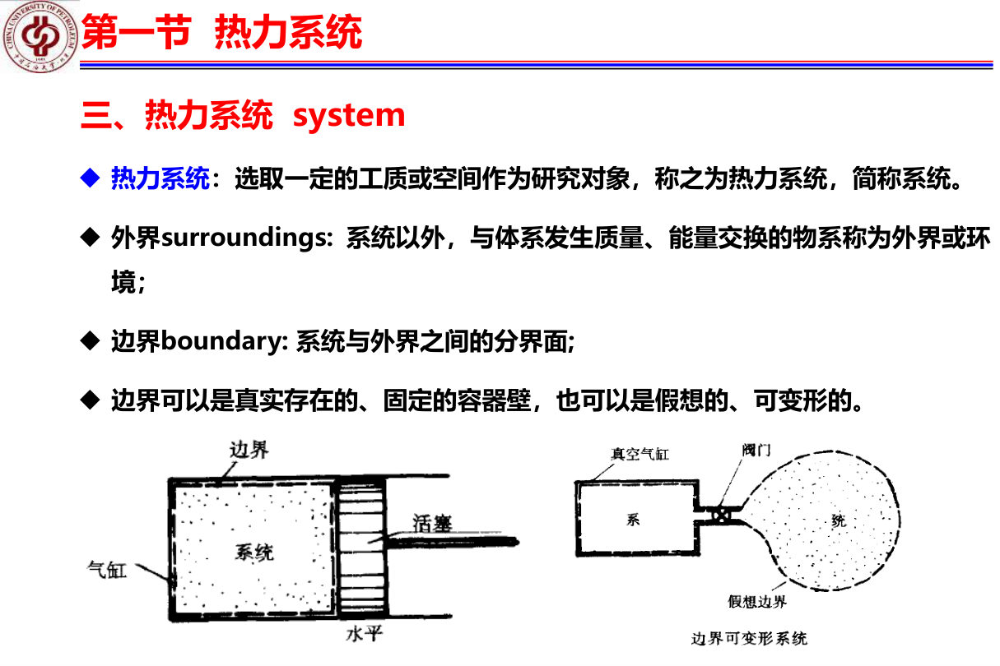
图上有什么：左图：气缸 + 活塞，边界 = 缸壁与活塞面（真实存在、可以移动）；右图：真空气缸经阀门连着一个气球状虚线区域——边界是假想、可变形的。
怎么读：系统=选定的研究对象（一定工质或空间），边界是系统与外界的分界面，边界之外与系统发生质/能交换的是外界。
🎯 重点：边界三连问——真实还是假想？固定还是可动？固定质量还是固定容积？这决定了系统分类（下一张图）。
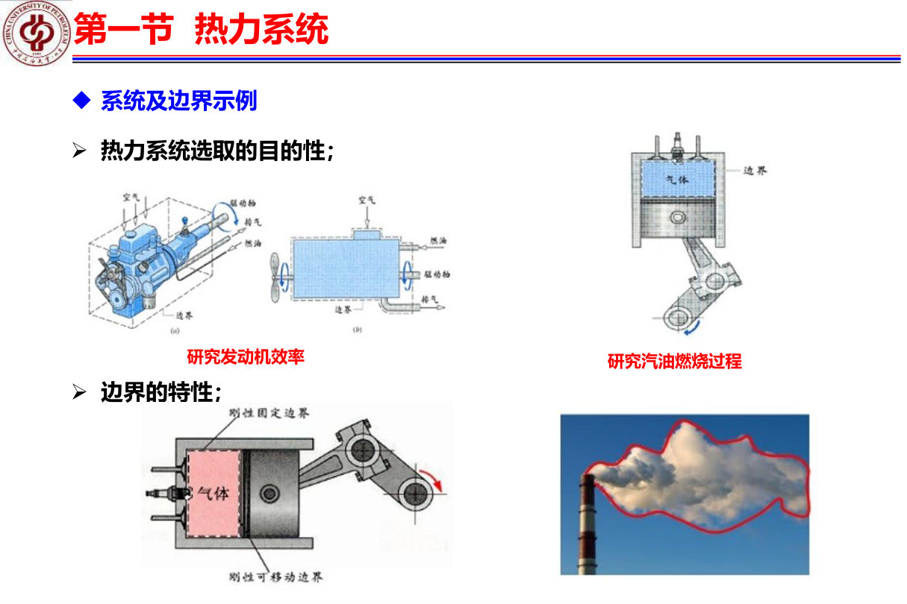
图上有什么：左：研究发动机效率——虚线边界包住整台柴油机，穿越边界的有进气、排气、驱动轴（还有缸套冷却水）；中：同一台发动机简化成开口方框模型（空气进、燃油进、驱动轴、排气出）；右：研究汽油燃烧过程——边界只圈住气缸内的气体；下排：刚性固定边界（缸头侧）与刚性可移动边界（活塞）的对比，以及烟囱烟羽照片（随流体划定的假想边界）。
怎么读：系统选取有目的性：研究整机效率就把整机当系统（开口系），研究缸内燃烧就只圈缸内工质（闭口系）。
🎯 重点：这是"如何划系统"的方法论图；作业题 1-1 第 3 问"列举石油工程中的开口/闭口系统案例"就考这个思路（井筒流动段=开口系，岩心定容腔=闭口系）。
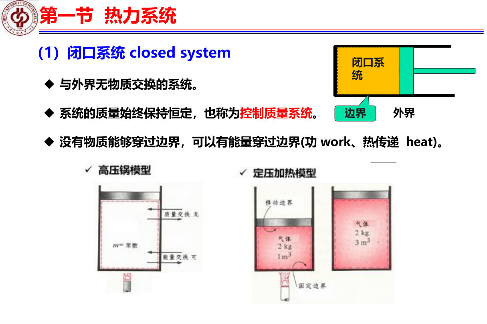
图上有什么：右上主图：黄色"闭口系统"+绿色"边界"+外界；下方两个模型：高压锅模型（m = 常数，标注"质量交换：无；能量交换：可"）、定压加热模型（气体 2 kg、1 m³ → 气体 2 kg、3 m³，边界由"移动边界+固定边界"组成）。
怎么读：闭口系 = 与外界无物质交换的系统，又称控制质量系：质量恒定，但功和热可以穿过边界；体积完全可以变（1 m³ → 3 m³）。
🎯 重点：记住八个字"质量交换无、能量交换可"；⚠️ 高压锅模型直接证伪"闭口系体积不能变"这一常见错判。
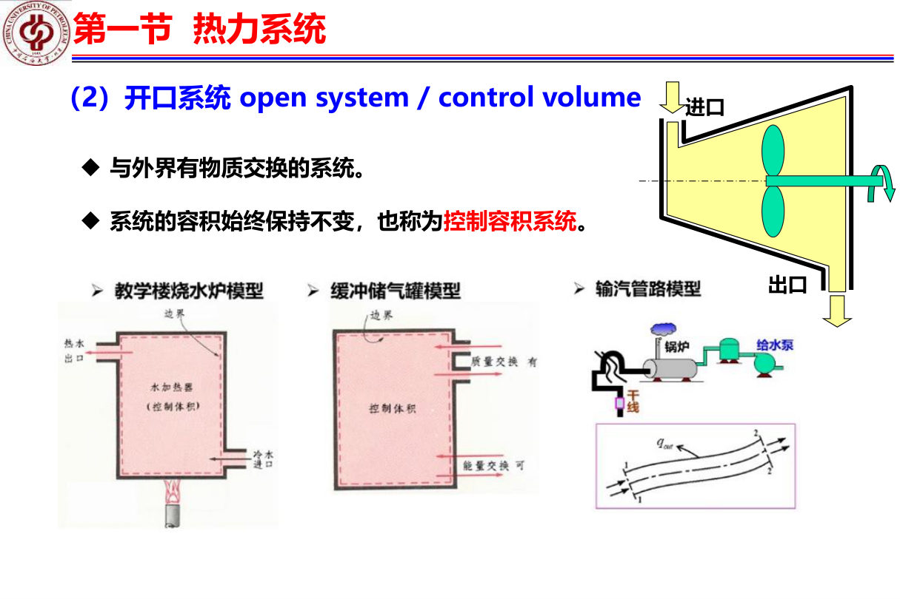
图上有什么：右上主图：压气机剖视（黄色气流从进口进、出口出，叶轮转动）；下方三个模型：教学楼烧水炉（水加热器=控制体积，冷水进口、热水出口）、缓冲储气罐（控制体积，标注"质量交换：有；能量交换：可"）、输汽管路（锅炉 → 干线 → 管段 1-2，沿途热损失 qloss）。
怎么读：开口系 = 与外界有物质交换的系统，又称控制容积系：容积恒定、物质进出、伴随能量交换。
🎯 重点：工程上绝大多数连续运行的设备（压气机、泵、换热器、井筒）都按开口系分析——第二章的稳定流动能量方程就是为它准备的。
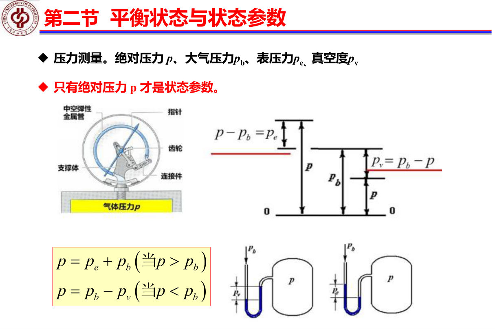
图上有什么：左：弹簧管压力计结构（中空弹性金属管、指针、齿轮、连接件，感受气体压力 p）；右上：以零为基准的线段图——当 p > pb 时 p − pb = pe（表压），当 p < pb 时 pv = pb − p（真空度）；右下：两支 U 形管分别测量真空度 pv 与表压 pe；黄色公式框：p = pe + pb（当 p > pb）；p = pb − pv（当 p < pb）。
怎么读：压力表测到的永远是"与大气压的差"：线段图把 p、pb、pe、pv 四者的加减关系画成一目了然的长度关系。
🎯 重点：课件红字"只有绝对压力 p 才是状态参数"。所有热力计算必须先用 p = pb + pe（或 p = pb − pv）换算成绝对压力；作业题 1-1 第 2 问即考此图。
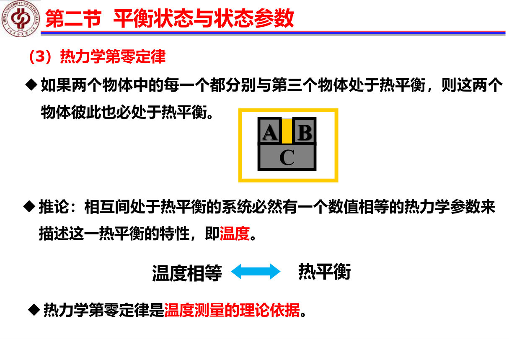
图上有什么：黄框中 A、B 两物体并排坐在物体 C 上——A 与 C、B 与 C 分别热平衡，则 A、B 彼此热平衡；下方双箭头：温度相等 ⇔ 热平衡。
怎么读：第零定律保证"温度"作为状态参数存在；温度计就是图中的 C——不用把 A、B 直接接触，用 C 比较即可。
🎯 重点：一句话考点："热力学第零定律是温度测量的理论依据。"
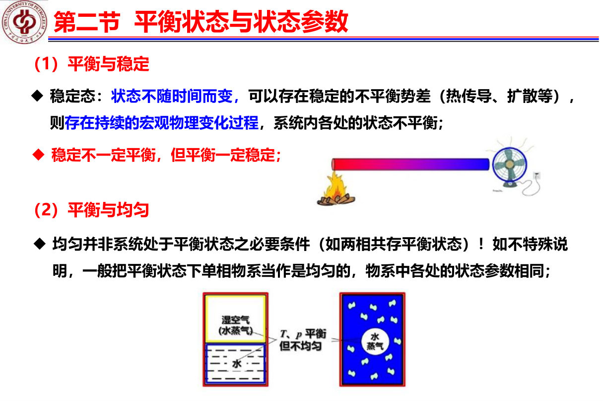
图上有什么：上排：火焰加热金属杆一端（红热）、风扇冷却另一端——杆上温度呈红→蓝的稳定分布：这是稳定态（各点温度不随时间变）但存在温差，是持续的不平衡。下排：左容器"湿空气（水蒸气）+ 液态水"两相共存，标注"T、p 平衡但不均匀"；右容器为全部水蒸气（均匀单相）。
怎么读：两个反例分别对应两条结论：① 稳定不一定平衡，但平衡一定稳定（稳定态可携带稳定的不平衡势差，如稳态导热）；② 均匀不是平衡的必要条件（两相共存也是平衡态），单相平衡系才通常均匀。
🎯 重点：作业题 1-1 第 1 问的标准答案素材；判断题"稳定即平衡"“均匀即平衡"都拿这两张小图反驳。
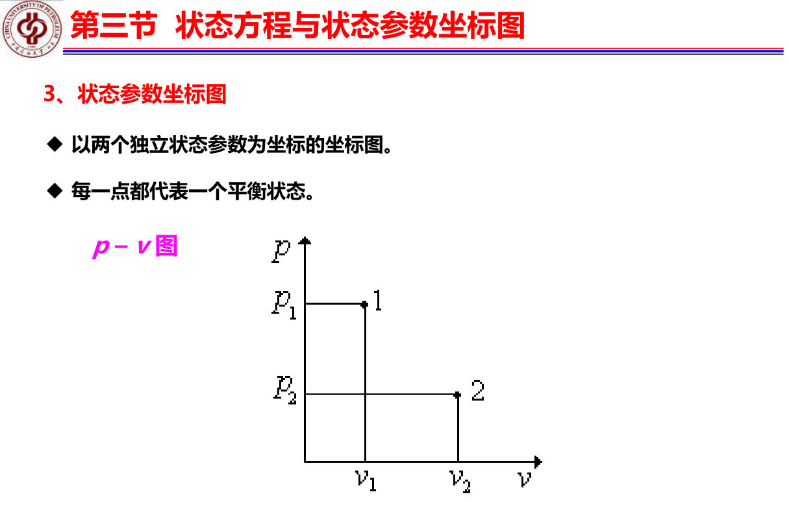
图上有什么：p-v 图上两个点：点 1（p₁, v₁）、点 2（p₂, v₂），各自用虚线向坐标轴投影读数。
怎么读：以两个独立状态参数（如 p、v）为坐标，每一个点代表一个平衡状态——因为简单可压缩系只需两个独立参数即可锁定状态（状态公理 N = n+1 = 2）。
🎯 重点：反过来说：非平衡状态没有确定的参数值，画不成点。这句话是"为什么只研究平衡态"的图解答案。
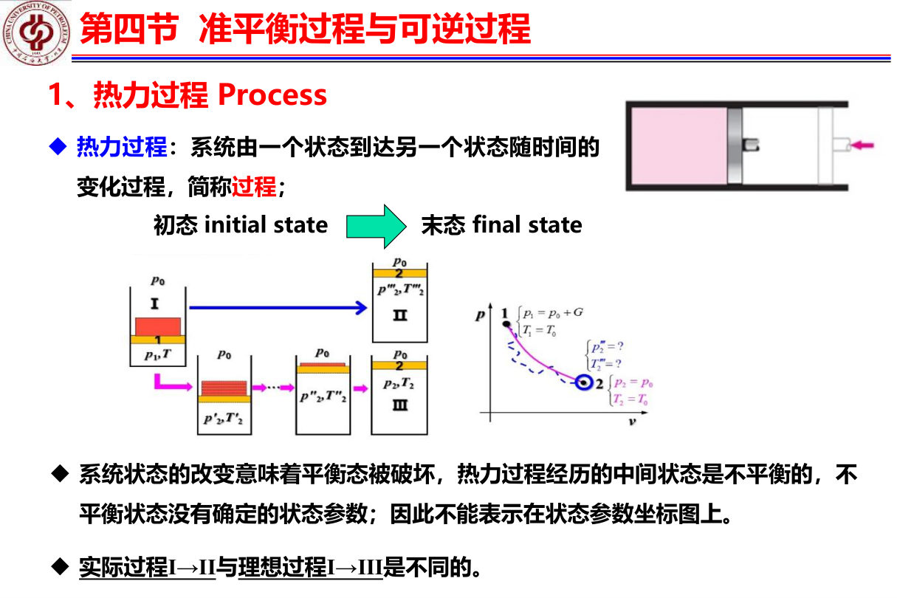
图上有什么：右上：气缸内活塞被快速释放（失衡瞬间）；中下：一系列气缸——把压在活塞上的重物（砝码）逐个取下，系统依次经过中间态 (p″₂, T″₂) 缓慢到达终态 III；右侧 p-v 图：点 1（p₁=p₀+G, T₁=T₀）沿虚线准平衡路径到达点 2（p₂=p₀, T₂=T₀）。
怎么读：一次取下全部砝码 = 实际过程 I→II（中间态失衡、无确定参数、画不到图上）；逐个取砝码 = 准平衡（理想）过程 I→III（每个瞬间都近似平衡，可画出过程线）。
🎯 重点：准平衡的条件（不平衡势无限小、过程足够慢、弛豫时间短）全部对应图中"逐个取砝码"的操作；下一张图（P36）进一步说明：气体工质因弛豫时间极短，很容易满足准平衡条件。
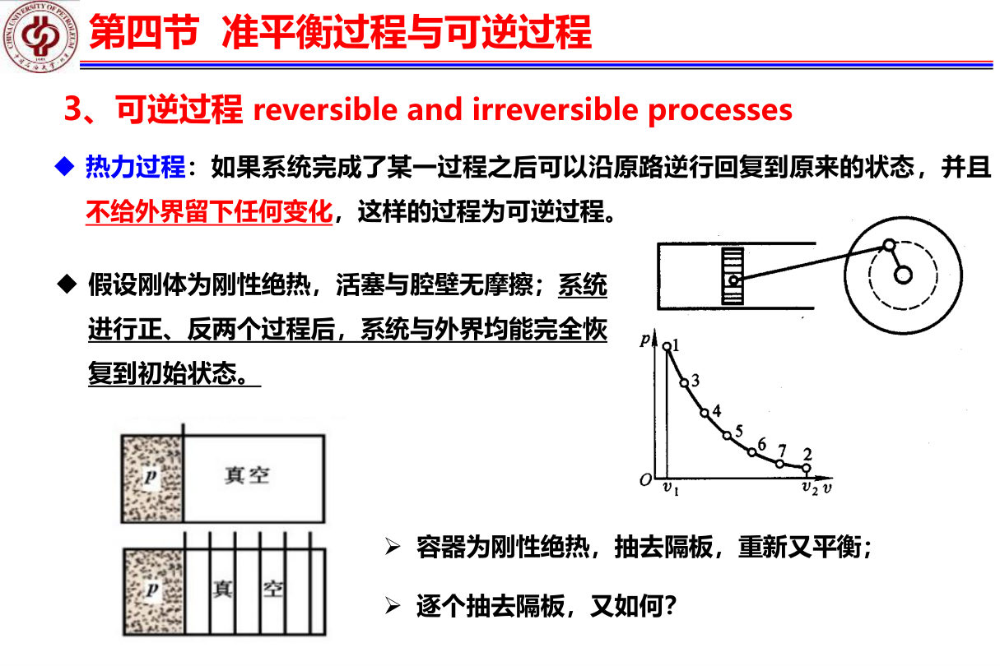
图上有什么：右上：气缸-活塞通过连杆驱动飞轮（假设刚性绝热、活塞与腔壁无摩擦）——正、逆两过程后系统与外界均完全复原，p-v 图上 1→3→4→…→2 是一条连续曲线；左下：左半有 p 气体、右半真空的容器——一次抽去隔板（气体冲入真空）与逐个抽去隔板（近似准平衡）两种方案对比。
怎么读：无摩擦的准平衡过程可以沿原路逆行且不给外界留痕迹 → 可逆。自由膨胀（一次抽隔板）即使无摩擦也收不回：气体不会自动缩回左半边 → 不可逆的典型。
🎯 重点：可逆 = 准平衡 + 无耗散效应；实际过程都不可逆（传热、混合、扩散、燃烧……），先按可逆算出上限再修正。判断题"不可逆=回不到初态"的错误点：是可以回到初态，但外界留了变化。
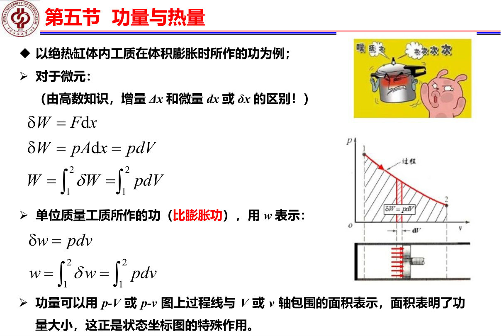
图上有什么：推导链：δW = Fdx = pA·dx = pdV → W = ∫₁²pdV；比膨胀功 δw = pdv，w = ∫₁²pdv；右侧 p-v 图：过程线 1→2 下取微元竖条，标注 δW = pdV（阴影），对应下方气缸-活塞受力（F = pA，位移 dx）；左上高压锅卡通提示"增量 Δx 与微量 dx/δx 的区别"。
怎么读：从力学位移定义出发（力 × 位移），把 p·A 换成压力、dx·A 换成 dV，就得到热力学的体积功公式；每一微元条 = 当前压力 × 当前体积增量。
🎯 重点："p-v 图上过程线下面积 = 膨胀功"从这张图来；微元功记 δW 不记 dW（过程量、非全微分）。课件红字：面积表明了功量大小，"这正是状态坐标图的特殊作用"。
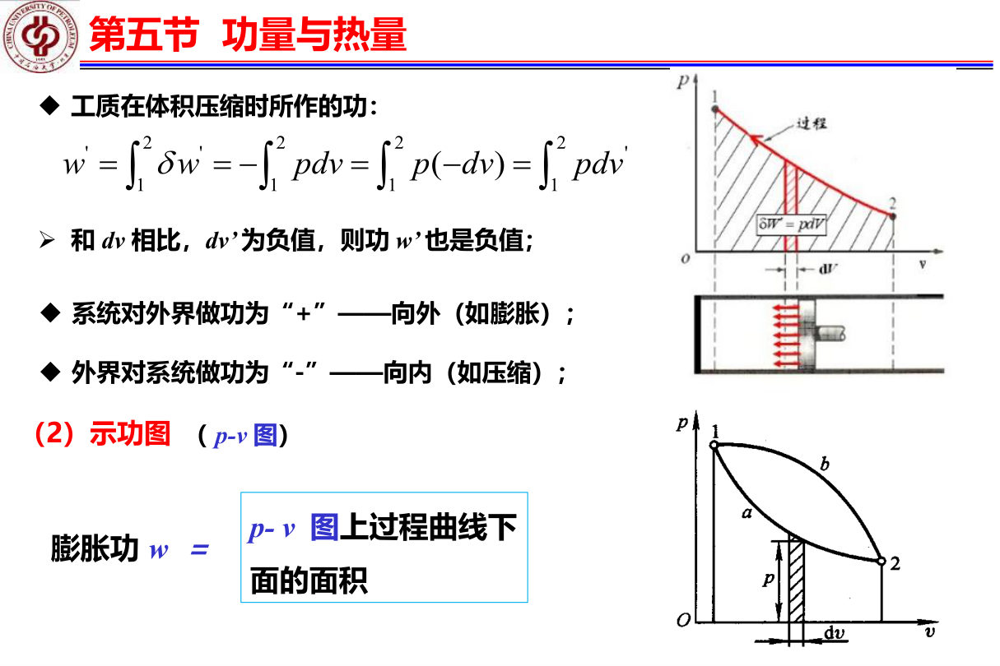
图上有什么：上：压缩过程的 p-v 图（沿过程线 2→1，微元 δW′ = pdv′，dv′ 为负 → w′ 为负）+ 气缸受力示意；下：示功图——初终态 1、2 之间画两条不同路径 a、b，曲线下面积明显不同。
怎么读：符号约定在此定死：系统对外做功为"＋"（膨胀、向外），外界对系统做功为"−"（压缩、向内）。
🎯 重点：示功图（p-v 图）是发动机/压气机测试的真实工具，曲线包围面积=单循环功；这张图同时为下一张"功是过程量"做铺垫。
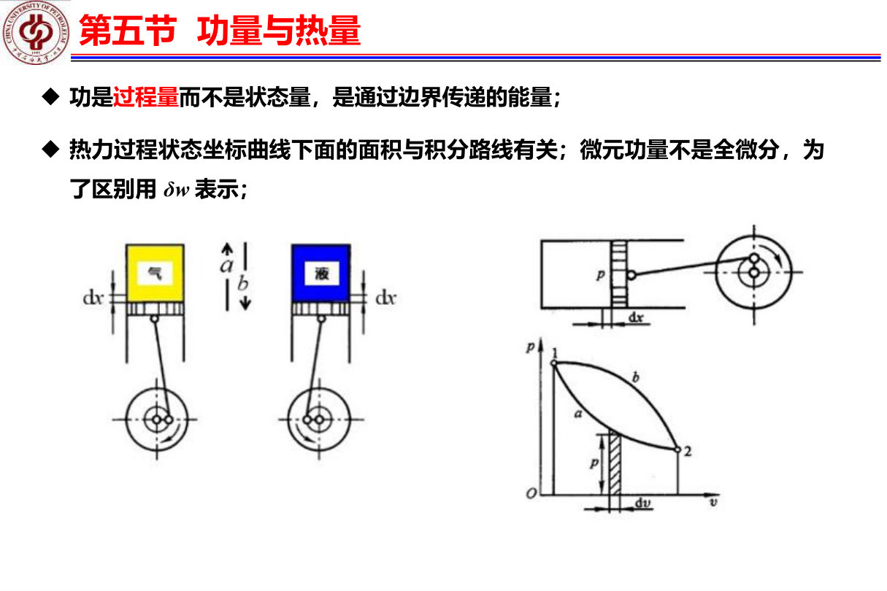
图上有什么：左：两个气缸——一个装气体、一个装液体，曲柄转向不同（a↑b↓），同样压缩 dx 但路径不同；右：活塞-飞轮机构 + p-v 图上 1→a→2 与 1→b→2 两条路径，曲线下阴影面积不同。
怎么读：功 = 过程线下面积，而面积与积分路线有关 → 初终态相同、路径不同，功就不同。
🎯 重点：课件红字"功是过程量而不是状态量"；因此微元功不是全微分，必须写 δw。⚠️"某状态含有多少功/热"是病句——功和热是过程中通过边界传递的能量。
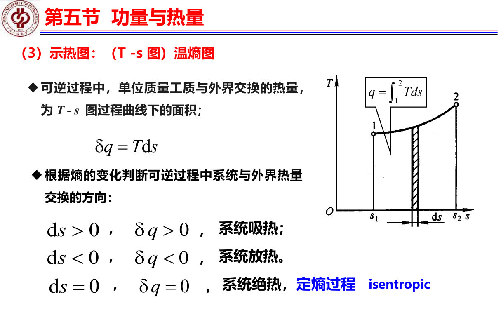
图上有什么：右侧 T-s 图：过程线 1→2，微元竖条标注 δq = Tds（阴影），q = ∫₁²Tds，熵从 s₁ 增到 s₂；左侧判据：ds > 0 ⇒ δq > 0 系统吸热；ds < 0 ⇒ δq < 0 系统放热；ds = 0 ⇒ δq = 0 系统绝热（定熵过程 isentropic）。
怎么读：由熵的定义 δs = δq/T（可逆）反写出 δq = Tds——于是 T-s 图与 p-v 图完全对称：T↔p（都是"势"）、s↔v（都是"坐标"）、q↔w（都是过程量）。
🎯 重点：课件红字"根据熵的变化判断热量交换方向"——这是第三章画 T-s 图判断吸放热的依据；配套 P48：对质量 m 的工质 δQ = TdS、Q = ∫TdS。有了这张图，"熵"从抽象定义变成可视面积。
P3 工质三态分子示意（固态-冰 / 液态-水 / 气态-蒸汽）——气态的膨胀性、流动性最好，故工质首选气态。
P4 三类热机结构图：蒸汽轮机（瓦特）、四冲程内燃机、燃气轮机——共同特点：工质吸热 → 膨胀做功 → 排热。
P5 热源示意：核电站发电装置与制冷/制热空调装置——热源=热容量极大、吸放热时自身温度不变（锅炉、大气、循环水池）；供热的叫高温热源，吸热的叫低温热源。
P10 绝热系（保温瓶 cartoon）与孤立系（"整体孤立"）示意——绝热=无热量交换；孤立=既无能量又无物质交换。
P15、P24 比参数 v = V/m、u = U/m 的气缸示意与比体积/密度卡通（v·ρ = 1）——比参数用小写、与尺度无关。
P20、P23 温标三要素图（水银温度计在冰水混合物/沸水中定标）与测温仪表照片（接触式：水银/热电偶/电阻；非接触式：辐射高温计/CARS）。
P25–26、P28–30 非平衡势差卡通、四平衡文字框、状态公理"独立参数 N = n+1"图、简单可压缩系气缸图——文字为主，公式与结论见笔记 1.2/1.3 节。
P36 准平衡条件补充图——不平衡势小 + 过程足够慢 + 弛豫时间短；气体工质弛豫时间极短，天然容易满足准平衡。
P39 尺度/计量简化照片（钢丝绳、非织造布、绳团、卷尺）——纵横比差异大可简化成一维等"误差相容"思想。
P49–50 作业题 1-1（五道概念判断）与作业题 1-2（储气罐恒温给气球充气，求 0.3/0.182/0.15 MPa 三种压力下气体做功）——本题正是"体积功 W = ∫pdV"的应用。
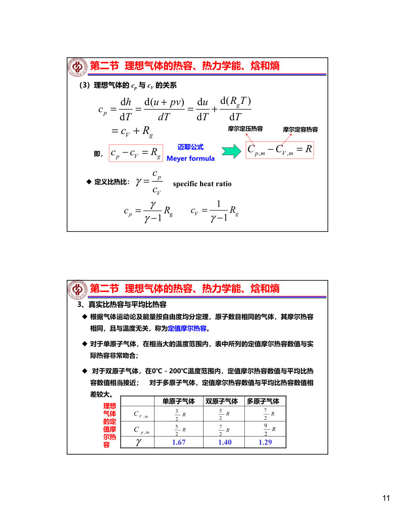
图上有什么：上：迈耶公式完整推导：cp = dh/dT = d(u+pv)/dT = cV + Rg（关键是 h = u + pv = u + RgT），摩尔形式 Cp,m − CV,m = R；比热比 γ = cp/cV，从而 cp = γRg/(γ−1)、cV = Rg/(γ−1)。下：定值摩尔热容表——单原子（3R/2、5R/2、γ=1.67）、双原子（5R/2、7R/2、γ=1.40）、多原子（7R/2、9R/2、γ≈1.29）。
怎么读：推导的物理内核：同样升温 1 K，定压过程多吸的热恰好用于对外做体积功（pv 的增量）。表格按"原子数"取值：能量均分定理——自由度越多热容越大。
🎯 重点：三个 γ 值是常考记忆点（空气≈1.4）；适用性注记：单原子大范围准确、双原子 0–200 ℃ 内接近、多原子偏差较大。
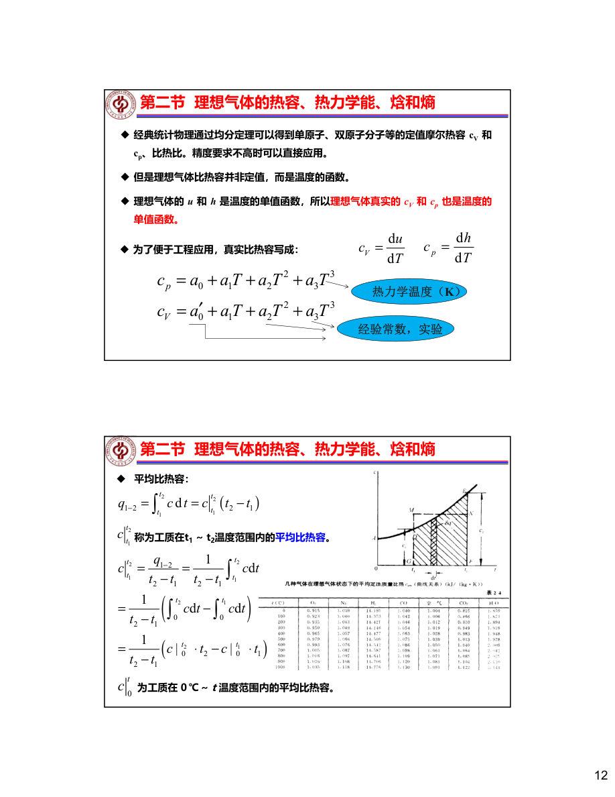
图上有什么：上：真实比热容多项式 cp = a₀ + a₁T + a₂T² + a₃T³（T 用热力学温度 K，a 为实验经验常数）——因为 u、h 只是 T 的函数，真实比热容也是温度的单值函数。下：c-t 曲线图：曲边梯形面积 = 热量 q₁₋₂，用同底等面积的矩形高定义平均比热容 c̄|₍t₁→t₂₎ = q₁₋₂/(t₂−t₁)，并给出换算式 c̄|₍t₁→t₂₎ = (c̄|₀ᵗ²·t₂ − c̄|₀ᵗ¹·t₁)/(t₂−t₁)；附几种气体的平均定压质量比热容表（O₂/N₂/H₂/CO/空气/CO₂/H₂O，0~1000 ℃）。
怎么读：温度越高比热容越大（曲线越陡）→ 精确计算不能再用定值；工程上直接查"0 ℃~t 平均比热容表"，两个平均比热容一加权就得到任意温度区间的平均值。
🎯 重点：比热容的三级精度体系：定值（估算）→ 多项式（程序计算）→ 平均比热容表（手算精确值）；例题中用哪种取决于题目给的系数。
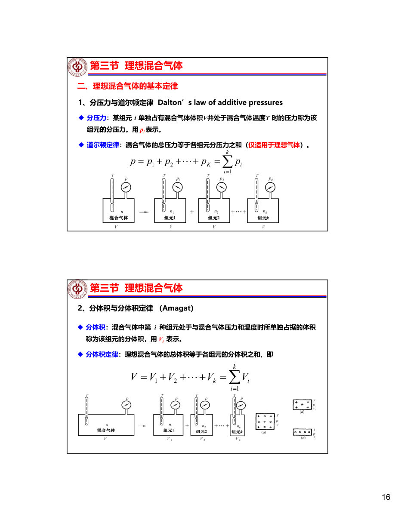
图上有什么：上：分压力与道尔顿定律——左侧一个混合气体容器（n, V, T, 压力计读 p），拆成右侧 k 个容器：组元 i 单独占据总体积 V、处于同温 T，压力计分别读 p₁…pk，且 p = p₁+p₂+…+pk = Σpi（标注"仅适用理想气体"）。下：分体积与分体积定律（Amagat）——混合气体（V）拆成各组元在同温同压下单独占据的 V₁…Vk，V = ΣVi。
怎么读：分压力 = "组元 i 单独占 V、处于 T"时的压力；分体积 = "组元 i 单独处于 p、T"时的体积。定义的前提条件（单独占据什么、同什么温压）是概念题挖坑点。
🎯 重点：两个定律都只对理想气体成立（分子互不干扰才可叠加）；由此立即得到体积分数 = 摩尔分数（φi = xi）。
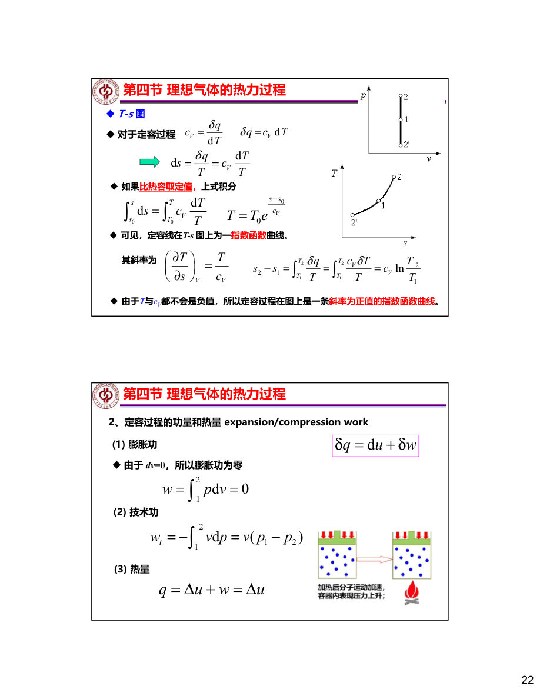
图上有什么：右上：p-v 图上定容线是垂直线段 2′-1-2；右下：T-s 图上定容线是指数曲线 T = T₀e^((s−s₀)/cV)，斜率 (∂T/∂s)V = T/cV，s₂−s₁ = cVln(T₂/T₁)。下半页：功量热量——w = ∫pdv = 0；技术功 wt = −∫vdp = v(p₁−p₂)；q = Δu + w = Δu；小图：刚性容器加热后分子运动加速、表压上升。
怎么读：定容 ⇒ dv = 0 ⇒ 膨胀功为零 ⇒ 吸热全部变成内能（分子动能↑ → 温度、压力同升）。
🎯 重点：⚠️ T-s 图上的定容线是指数曲线不是直线，斜率 T/cV 恒正；q = cVΔT 虽在定容过程导出，但对理想气体任何过程的 Δu 都成立。
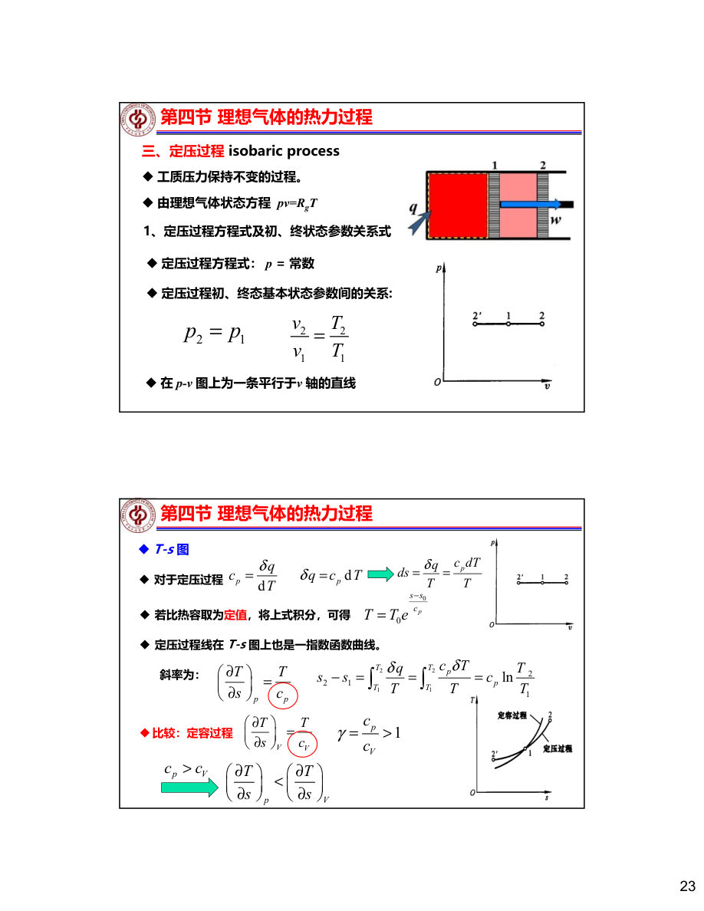
图上有什么：上：气缸-活塞定压加热（q 进入、w 输出、活塞右移 1→2）；p-v 图上定压线是平行于 v 轴的水平线（2′-1-2），v₂/v₁ = T₂/T₁。下：T-s 图上定压线也是指数曲线 T = T₀e^((s−s₀)/cp)，斜率 (∂T/∂s)p = T/cp；对比框：γ = cp/cV > 1 ⟹ (∂T/∂s)p < (∂T/∂s)V，小图中过同一点的"定容过程线"明显比"定压过程线"更陡。
怎么读：同样升高 1 K，定压要多吸热（多出的热去对外做功）→ 熵增更大 → 同样 ΔT 下定压线横向"走得更远"，看起来更平缓。
🎯 重点：T-s 图定性题必背结论：定容线陡、定压线缓（过同一点）；定压过程 q = Δh = cpΔT、w = pΔv = RgΔT、wt = 0。
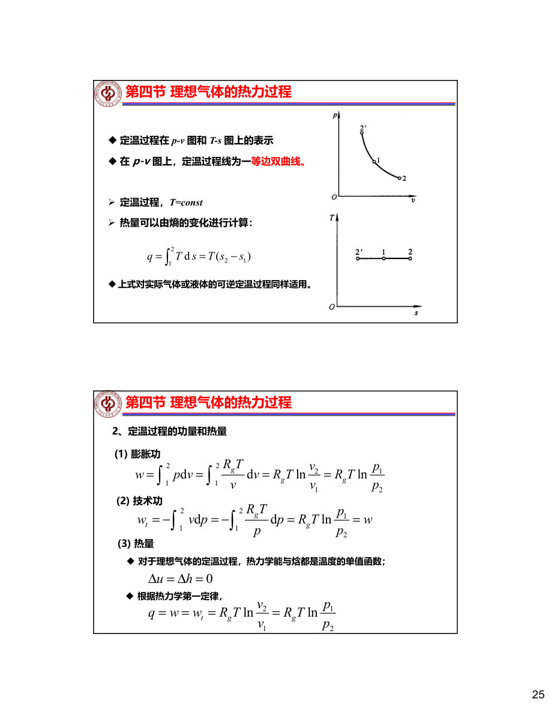
图上有什么：右上：p-v 图上定温线为等边双曲线（pv = 常数，2′-1-2）；右下：T-s 图上定温线为水平线（2′-1-2）；q = ∫Tds = T(s₂−s₁)——课件注明：此式对实际气体或液体的可逆定温过程同样适用。下半页：w = ∫RgT·dv/v = RgT·ln(v₂/v₁) = RgT·ln(p₁/p₂)；wt = −∫vdp = w；Δu = Δh = 0 ⟹ q = w = wt。
怎么读：T 不变 ⇒ u、h 不变 ⇒ 吸热全部对外做功（最"纯粹"的热变功过程）。
🎯 重点：p-v 图上双曲线与后面绝热线的陡缓对比是必考点；q = TΔs 不限理想气体（任何工质的可逆定温都行），但 w = RgT·ln(v₂/v₁) 只限理想气体。
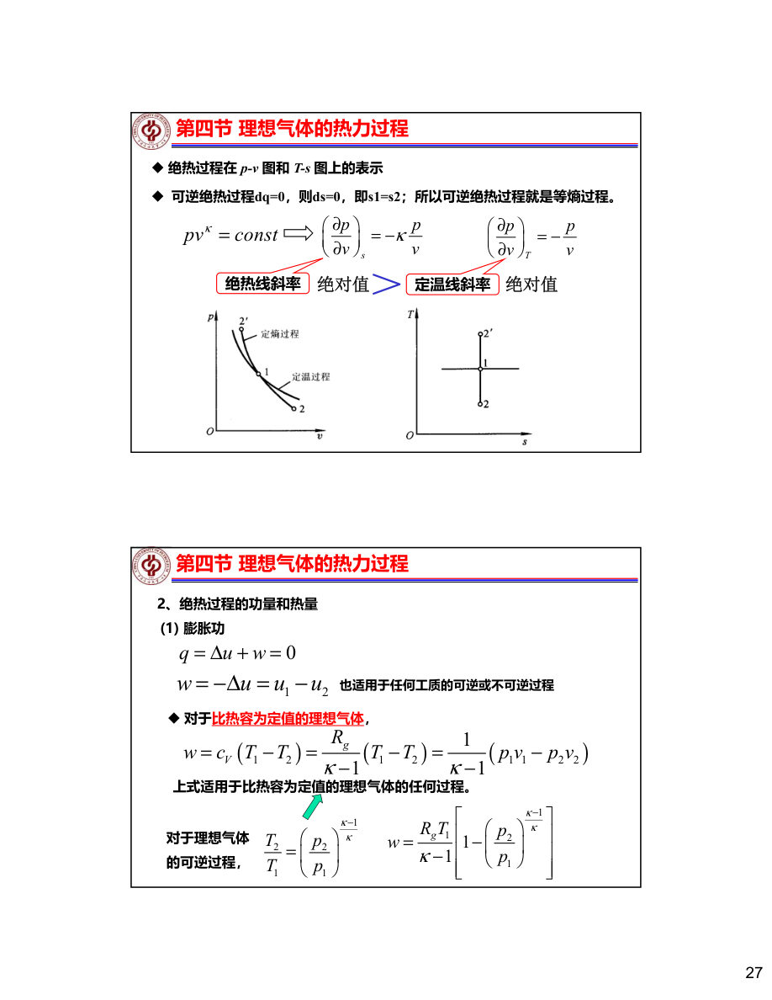
图上有什么：上：可逆绝热 dq = 0 ⟹ ds = 0 ⟹ s₁ = s₂（可逆绝热=定熵）；p-v 图：过同一点 1 的绝热线与定温线——绝热线更陡（膨胀到同样比容，绝热降压更快，终点 2 低于定温终点 2′）；斜率比较 |(∂p/∂v)s| = κp/v > |(∂p/∂v)T| = p/v；T-s 图：垂直线段 2-1-2′。下：w = q − Δu = −Δu = u₁ − u₂（绿色标注：也适用于任何工质的可逆或不可逆过程）；定比热理想气体：w = cV(T₁−T₂) = Rg(T₁−T₂)/(κ−1) = (p₁v₁−p₂v₂)/(κ−1)，wt = κw。
怎么读：绝热膨胀不吸热，做功全靠消耗内能 → 温度、压力一起掉得比定温更快 → 线更陡。
🎯 重点：两件事必背：① |绝热线斜率| > |定温线斜率|（因为 κ > 1）；② w = −Δu 适用范围最广（第一定律，不需要可逆），而含 κ 的公式只限"定比热 + 可逆"。
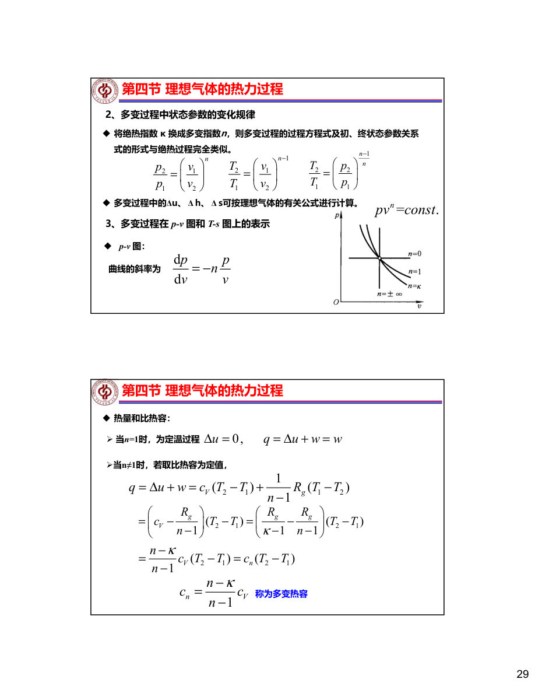
图上有什么：上：把绝热关系式中的 κ 换成 n，即得多变过程的参数关系（p₂/p₁ = (v₁/v₂)ⁿ 等）；p-v 图上过同一点画 n = 0（水平线）、n = 1（双曲线）、n = κ、n = ±∞（垂直线）四条基准线，曲线斜率 dp/dv = −n·p/v。下：热量与比热容：q = Δu + w = cV(T₂−T₁) + Rg(T₁−T₂)/(n−1) = [(n−κ)/(n−1)]·cV·(T₂−T₁) = cn(T₂−T₁)，其中 cn = (n−κ)/(n−1)·cV 称为多变热容。
怎么读：n 是"过程性质旋钮"：记住四条基准线的相对位置，任何 n 值的过程线都能徒手画出来；多变热容把任意过程的热量写成 q = cnΔT 的统一形式。
🎯 重点：cn 四特例：n=0 → cp；n=1 → ∞；n=κ → 0；n→∞ → cV。当 1 < n < κ 时 cn < 0——出现"吸热反而降温（膨胀）"的反直觉现象，难点考点。
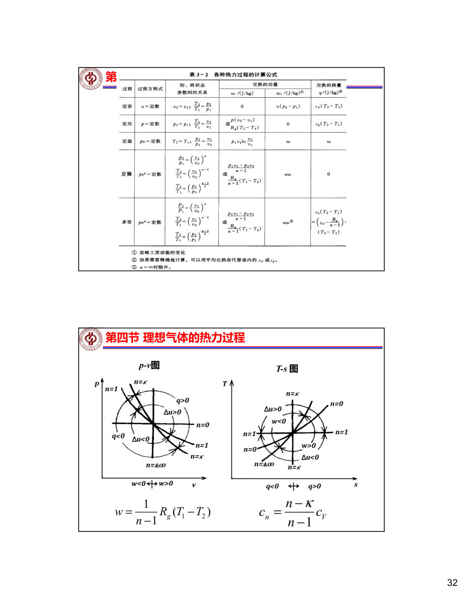
图上有什么：上：表 3-2"各种热力过程的计算公式"——五行（定容/定压/定温/定熵/多变）× 五列（过程方程式、初终态参数关系、w、wt、q），注：①忽略工质动位能变化；②精确计算可用平均比热容代替表内 cV、cp；③n=∞ 时除外。下：左 p-v 图：过同一点的 n=1、n=κ、n=0、n=±∞ 四条线把平面分成八个区，标注 Δu>0 区、q>0/q<0 区、w<0↔w>0 分界；右 T-s 图：n=κ 垂直向上、n=0 与 n=1 两条指数线、n=±∞ 水平向左，同样标注 Δu、w、q 的正负分区。
怎么读：表 3-2 就是"五过程一张表"的课件原版；两张全景图是定性分析神器——任意给一个 n 值，把过程线从公共点画出来，看它落在哪个区，就能不计算判断：膨胀还是压缩（w 正负）、吸热还是放热（q 正负）、升温还是降温（Δu 正负）。
🎯 重点：本章压轴能力＝"给 n 判性质"。例如 1 < n < κ 的膨胀过程：w>0、q<0（膨胀同时放热）、Δu<0——全部可从图上直接读出；期末综合题的第一步往往就是画这张图。
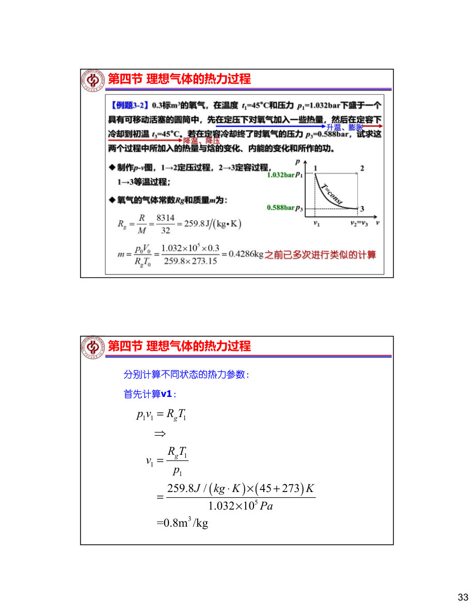
图上有什么：题面：0.3 m³ 氧气盛于有可移动活塞的圆筒中，t₁ = 45 ℃、p₁ = 1.032 bar；先定压加热（升温、膨胀），再定容冷却到初温 45 ℃，终了压力 p₃ = 0.588 bar；求两过程的吸热量、焓变、内能变化和做功。右侧 p-v 图：点 1（1.032 bar, v₁）→ 点 2（定压，v₂）→ 点 3（0.588 bar, 定容），1→3 之间有虚线"T = const"等温线；下方：Rg = R/M = 8314/32 = 259.8 J/(kg·K)，m = p₀V₀/(RgT₀) = 1.032×10⁵×0.3/(259.8×273.15) = 0.4286 kg。
怎么读：解题第一步永远是"画 p-v 图并标注三个状态"——1→2 定压水平线、2→3 定容垂直线、1 与 3 同温（落在同一条等温双曲线上）。
🎯 重点：氧气的 Rg 由摩尔质量算（M = 32）；m 用标准状态或任意已知状态的状态方程求。这道题串联了状态方程 + 三个热力过程 + 定值摩尔热容，是本章最典型的综合题模板。
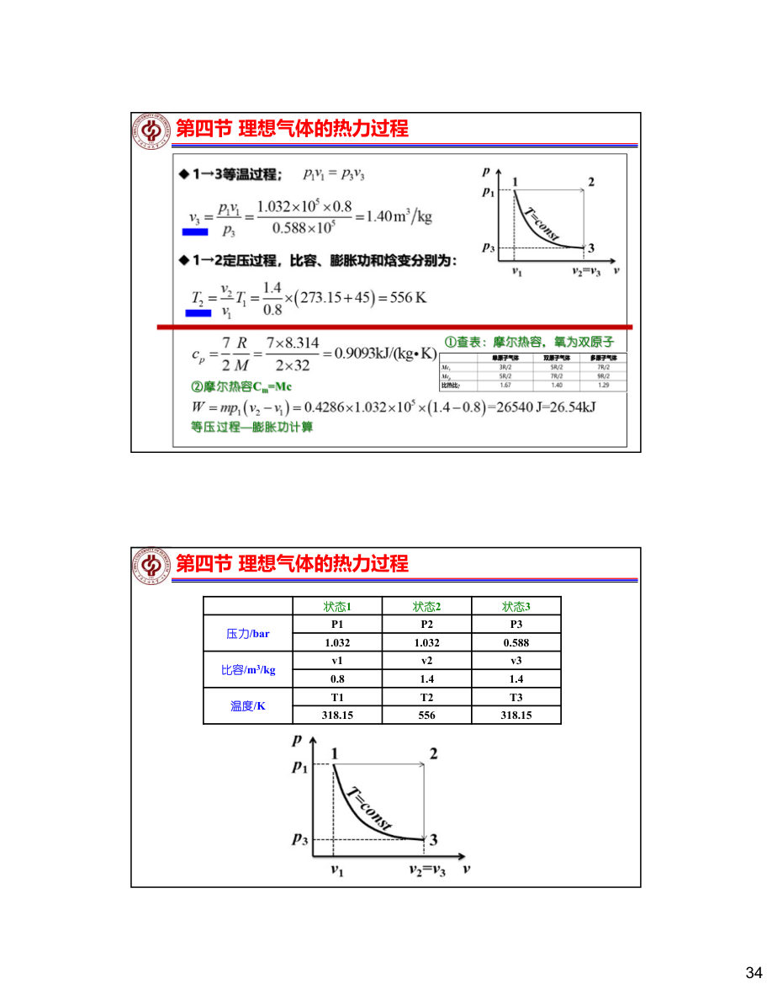
图上有什么：状态表：状态 1/2/3 的压力（1.032 / 1.032 / 0.588 bar）、比容（0.8 / 1.4 / 1.4 m³/kg）、温度（318.15 / 556 / 318.15 K）；p-v 图与上页相同；计算链：1→3 等温线给出 v₃ = p₁v₁/p₃ = 1.4 m³/kg；1→2 定压：T₂ = (v₂/v₁)T₁ = 556 K；cp = (7/2)R/M = 0.9093 kJ/(kg·K)（氧为双原子，查定值摩尔热容表 Cp,m = 7R/2）；W = mp(v₂−v₁) = 26.54 kJ（等压过程膨胀功计算）。
怎么读：表格把"先参数、后公式"的解题纪律具象化：三个状态 × 三个基本参数全部填出，再逐段选公式。续页（P35）完成计算：定压段 Q = ΔH = 93.03 kJ，其中 ΔU = 66.39 kJ、W = 26.64 kJ；定容段 W = 0、Q = ΔU = −66.39 kJ（放热），技术功 wt = v(p₂−p₃)·m = +26.64 kJ；因初终温度相同，全程 ΔU = 0，净吸热 = 净做功 ≈ 26.6 kJ——能量守恒闭环自检。
🎯 重点：学习这套"填表法"：任何过程分析题都先列状态表 → 画 p-v/T-s 图 → 按 w、wt、q 公式逐段计算 → 用整体守恒验算。
P1–2 章首页与气体/蒸汽分子示意——气体远离液态不易液化，蒸汽离液态较近易液化，二者无严格界限。
P7 单位自洽性检查图：m³/kg × kg/kmol = m³/kmol；J/m³ = N/m² = Pa——防止量纲错配。
P13、P19 练习题（空气定压加热求 Δu；喷气发动机扩压器进气 78.8 kg/s；双罐连通混合平衡 1.05 bar / 37.25 kJ）——状态方程与第一定律的数值练习。
P15 混合气体分子示意（不同点型共处一容器）——各组元"如同单独存在"。
P17–18 成分定义圈图（wi、xi、φi 均归一）与平均 M、Rg、比热容加权公式页——公式见笔记 3.3 节。
P21 热力过程研究目的/任务/依据 + 分析四步法（内燃机、蒸汽机卡通）——方法论页。
P24、P26、P28、P30–31 定压/绝热/多变的公式推导与特例页（wt=nw 推导、多变热容四特例表）——结论均已并入笔记 3.4 节表格。
P35–36 例题计算续页与结束页——数值见"图 3-11"说明。